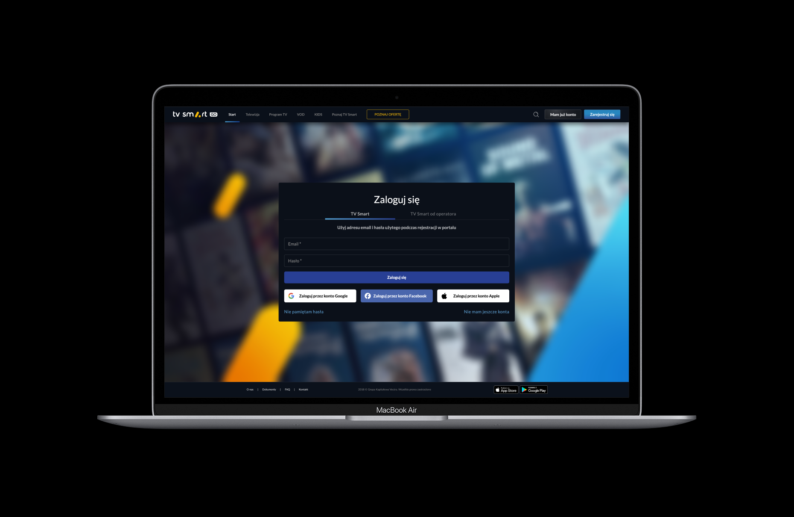
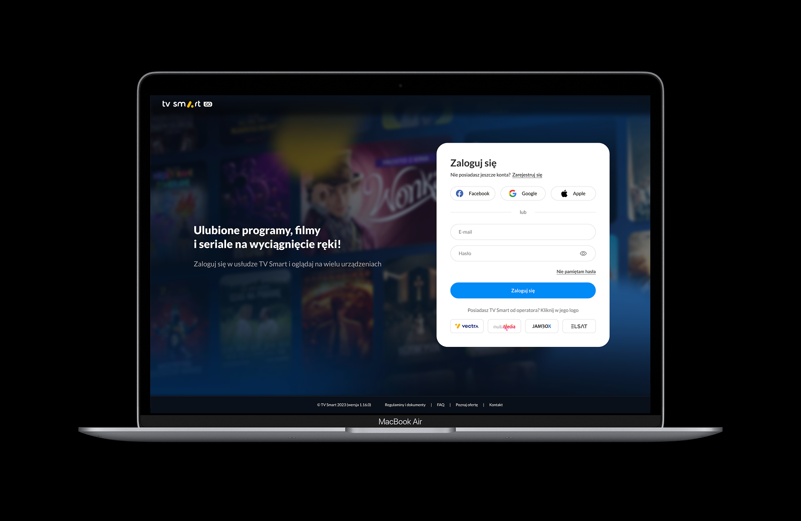
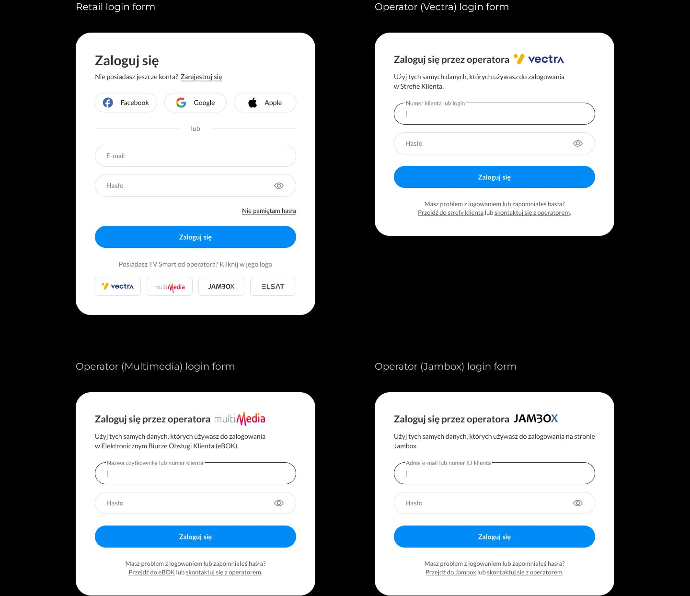
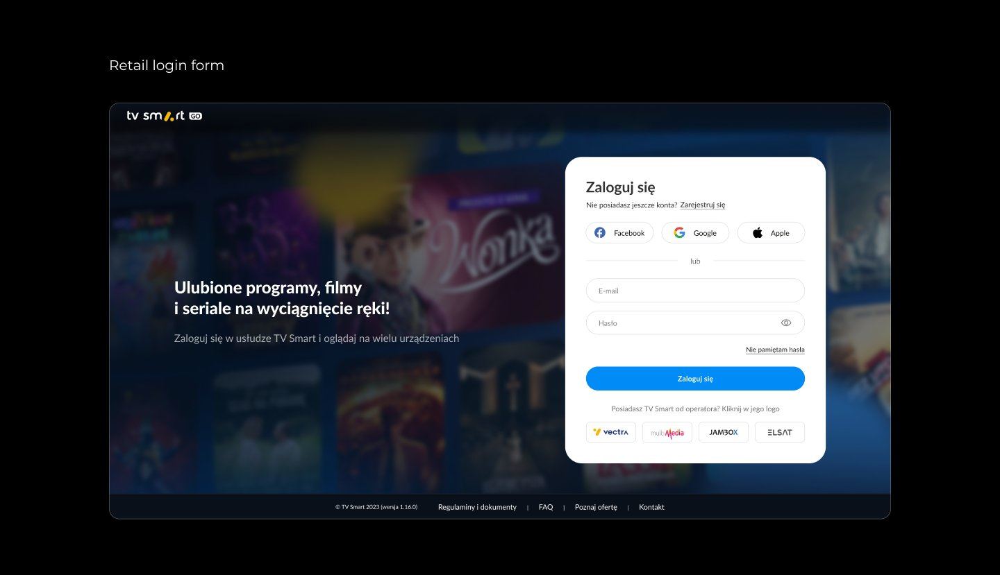

I design and shape digital products end-to-end, aligning user needs, business objectives, and technical realities — from discovery to delivery, focusing on measurable impact.
I design and shape digital products end-to-end, aligning user needs, business objectives, and technical realities. I drive the design process from discovery to delivery, focusing on measurable impact — improving usability, conversion, and retention.
I work closely with cross-functional teams — Tech, Sales, Marketing, Customer Care — to deliver thoughtful, scalable, user-centred solutions. My work spans mobile apps, web applications, TV platforms, set-top boxes, CRM systems, and dashboards.
Currently working as Expert Product Designer at Grupa Pracuj — leading design on pracuj.pl web, actively involved in Product Discovery and Continuous Discovery, designing in line with Design System and Content Style Guide standards.
Previously Lead UX/UI Designer & Consultant at Vectra, where I led a multiplatform Smart TV project across mobile apps, web, set-top boxes and TV apps, and designed the CRM system for Vectra employees. I'm drawn to health tech, complex enterprise systems, and AI-native product design — areas where the design problem runs deeper than the surface.
TV Smart by Vectra is a comprehensive streaming platform available across four surfaces: TV decoder, Smart TV app, responsive web, and mobile app. This case study focuses on redesigning the login and registration flow for the web application, covering both desktop and mobile versions.
The project started with a concrete business problem: a low percentage of users were completing the login process, and many were calling operator helplines because they couldn't navigate onboarding. Product analytics confirmed a low completion rate. Operator helplines simultaneously reported a high volume of calls from users who didn't know how to proceed.
TV Smart serves two distinct user types. Subscription users register and log in directly through the TV Smart platform. Operator users are customers of separate partner companies — Vectra, Multimedia, Jambox, and Elsat — who received access to TV Smart as part of their operator package. These users have their own dedicated login path, using credentials from their operator's system (e.g. customer number, eBOK login), not a TV Smart account. This distinction is fundamental to understanding why the login flow is complex and why a single generic form failed both groups.
For the business this meant: lost user activations, rising support costs, customer frustration, and a negative first product experience. We knew a problem existed — but not why users were dropping off.
The project covered the full cycle: usability tests → diagnosis → redesign → mockup validation → implementation → A/B test.
02
UX Audit
Before user research, I conducted a comprehensive UX audit of the existing login and registration process — identifying points where the architecture didn't support natural user behaviour.
The audit revealed multiple friction points: inconsistencies between system logic and user expectations, blocking validations instead of guiding users, artificial separation of login and registration, error messages that didn't help users decide, and missing contextual cues.
Example: Social login edge case
A logged-out user on the registration screen could click social login. The system blocked them with a "no account" error instead of recognising the intent and guiding them forward. Technically correct — experientially, an unnecessary obstacle. The process was designed around system structure, not user mental models.
Before — existing login screen

Dark modal combining login and registration with a tab toggle — high cognitive ambiguity, social login low in the hierarchy, poorly visible operator path.
03
Usability Research
I conducted usability tests with 10 participants — 5 operator users and 5 subscription users. During sessions I observed moments of hesitation, login path choices, reactions to errors, and decisions to restart the process.
Operator users (5)
Didn't notice the operator tab. Entered operator credentials into the TV Smart form. Received a generic "invalid credentials" error with no indication of the cause. Made repeated attempts instead of switching path. The error was interpreted as a password problem, not a process selection problem.
Subscription users (5)
Preferred social login and ignored the traditional form when an alternative existed. Registration requiring sign-up then re-login felt long and unintuitive. Extra steps raised doubts about whether the system was working. Onboarding needed to be as frictionless as possible.
Key insight
Users didn't understand the system's structure — and the interface wasn't helping them make the right decision.
04
Flow Documentation
Before designing, I mapped every authentication scenario — email login, social login (Google, Facebook, Apple), operator login for all four operators, password recovery, and registration with both email and social paths. No undefined edge cases, no flows invented mid-development.
Complete authentication flow map — every login path, registration variant, and edge case documented before design began.
05
Key Design Decisions
Based on research insights, the focus wasn't on reducing features — it was on changing the architecture of choice. We applied progressive disclosure: the most common path is visible immediately, other options don't create cognitive overload.
Social login elevated as default — before & after
Research showed subscription users preferred and actively sought social login. We moved it to the primary position — top of the form — to match actual usage patterns, reduce friction, and shorten the onboarding path for the majority of new users.
Before
After

Dedicated operator forms — one per operator
Vectra, Multimedia, Jambox, and Elsat each have different credential systems. A single generic form couldn't serve them all. Each operator now gets a dedicated form with their logo, contextual field labels matching their terminology, and "forgot password" links redirecting to their own portal.

Intent recognition — system adapts to user action
Previously if a user tried to log in without an account, the system blocked them with a generic error. Now the system recognises the intent and guides them forward automatically. Users don't need to understand which screen they're on — the process adapts to their action.
Registration as 2 clear steps
Step 01: account creation. Step 02: legal consents. Separating GDPR from credentials makes the legal step feel like a natural checkpoint rather than friction.
White form — a deliberate trust signal
Data from other services showed white forms generate more user trust in authentication flows — contrary to the dark-form convention common in streaming. We made this deliberate choice to differentiate the onboarding experience at the moment of maximum hesitation.
06
Final Designs

07
A/B Test & Results
After launch, a 2-week A/B test compared the new version against the previous flow at production scale. The decision to ship without another round of mockup testing was conscious — we wanted to validate on real quantitative data as quickly as possible.
+32%
Increase in completed logins
−41%
Fewer process restarts
−28%
Validation errors
−24%
Reduction in time to complete onboarding — 2-week A/B test, production scale
Key lessons
The project revealed that low login effectiveness was the result of multiple overlapping problems: flow structure, error messages, and rigid separation of registration from login. The biggest improvement came from removing moments where the system blocked users instead of guiding them forward.
Users don't analyse processes — they react to what they see on screen. Error messages directly influence the decision to abandon. The results were very well received by stakeholders, and the project became the starting point for planning the same redesign in the mobile app.
Pracuj.pl · Mobile Web · 2024
Improving the Mobile Web Application Flow
Pracuj.pl is Poland's largest recruitment platform, connecting employers with millions of job seekers since 2000. Despite strong desktop performance, the mobile web experience was generating significant drop-off — and no one had looked at the full journey holistically. This case study is about changing that.
Duration
Mar 2025 – present
My Role
Expert Product Designer — lead design on pracuj.pl web, Product Discovery, research & testing, Design System
Company
Grupa Pracuj — with Product Researcher, Product Owner, Front-end Developers, QA
Pracuj.pl serves four distinct user segments — white collar specialists and managers, blue collar workers in production and logistics, pink collar professionals in service and sales, and IT/digital specialists who represent the highest-demand segment on the platform. Each of these groups uses mobile web differently, with different goals and different pain points.
The mobile web experience had been built incrementally — new features added over time without ever stepping back to evaluate the full user journey. The result was a fragmented flow: search filters were difficult to use on small screens, the application process required too many steps, and users were dropping off before completing key actions that drive business value for the platform.
My job was to map the real experience, identify where and why users were leaving, and redesign the flow with a clear conversion focus — without breaking what was already working.
The core tension: a platform used by millions, where even small friction points in the mobile flow represent a significant business problem — but any change at this scale carries real risk.
02
My Approach
Before touching any screens, I needed to understand what was actually happening. I started by auditing the existing mobile web flow end-to-end — documenting every screen, every interaction, and every point where user momentum could be interrupted. This gave us a shared baseline and made the problems visible to the whole team, not just to me.
From there, I ran an alignment workshop with the Product Owner and Product Researcher to pressure-test our initial hypotheses. I've found this step is often skipped — teams assume they know what the problem is. The workshop surfaced several assumptions that turned out to be wrong, which saved us from designing solutions for the wrong problems.
The research phase combined qualitative user sessions across all four segments with task-based usability testing of the existing flow. I focused on recruiting participants who actually use mobile web for job searching — not desktop-first users who occasionally switch to mobile — because their behaviour patterns are fundamentally different.
03
Process
01Analysis
Full audit of the existing mobile web flow. I mapped every screen and transition, identified structural inconsistencies, and cross-referenced with available analytics to locate the highest drop-off points. This gave the team a concrete, shared picture of the problem — not just a vague sense that "mobile isn't working".
02Alignment & Strategies
Workshop with the PO and researcher to define the scope and agree on success criteria before research began. We also used this session to align on the four user segments and agree on which hypotheses were strong enough to test versus which needed more data first.
03Research
Qualitative sessions with real users across all four segments, each performing the same core tasks on the live mobile web: searching for a job, filtering results, opening a job detail, and completing an application. Sessions were recorded and analysed for patterns in behaviour, hesitation points, and verbal feedback.
04Key Findings
Three systemic issues emerged across all segments: filters were buried and too complex to use on touch, the application flow had redundant steps that caused users to abandon mid-process, and feedback states (loading, confirmation, errors) were unclear — leaving users uncertain whether their actions had registered. A fourth finding specific to IT/digital users was that the mobile job card showed too little information to make a decision without opening the full detail page, increasing back-navigation friction.
05Prioritisation Workshop
I ran a collaborative impact/effort session with the PO and development lead to score each finding against two axes: estimated business impact and implementation complexity. This produced a clear first-wave scope — the changes most likely to move conversion metrics without requiring a full platform rebuild.
06Tech Alignment
Before moving to high-fidelity design, I presented the prioritised solutions to the front-end team to validate feasibility and surface any technical constraints early. Two proposed changes required renegotiation at this stage — better to know before spending time on detailed screens than after.
07Final Designs & Handoff
High-fidelity mobile web screens covering the full redesigned flow: search entry, filter panel, results list, job detail card, and application steps. Delivered in Figma with full component annotations, interaction notes, and edge-case states. I stayed involved through QA to ensure the shipped product matched the intent of the design.
04
Key Design Decisions
Filter redesign — from buried to one tap
The existing filter was a full-page overlay requiring multiple taps to reach. Research showed users were either not using filters at all, or abandoning when the results didn't match what they wanted. I redesigned the filter entry as a persistent chip row below the search bar — always visible, immediately actionable — with a condensed panel for advanced options. This reduced the interaction cost from 4+ taps to 1.
Application flow — removing invisible friction
The application process had 6 steps on mobile. Several were redundant or required information that could be pre-filled from the user's profile. I worked with the PO to identify which fields were truly required at application time versus which could be deferred, and reduced the required steps to 3 for returning users. For new users, I introduced a progress indicator so the end of the process was always visible — one of the simplest changes with the clearest impact on completion rate.
Job card density — more signal, less noise
IT/digital users in particular were opening job detail pages only to go straight back — the card wasn't showing enough information to make a decision. I increased the information density of the card to include salary range (where available), seniority level, and work model (remote/hybrid/on-site) without increasing the card height. This reduced unnecessary page loads and back-navigation, improving the perceived speed of the experience.
05
Outcome
The redesigned mobile web flow was shipped across Pracuj.pl's platform, reaching millions of monthly users across Poland. The project became a reference point for how to approach mobile UX improvements on the platform — establishing a methodology that the product team could repeat for future features.
M+
Monthly users reached by the redesigned flow after shipping
4
Distinct user segments researched, each with different mobile behaviour patterns
3→1
Tap reduction to reach filters — from buried overlay to a single persistent chip row
What I'd do differently
I'd push earlier for instrumentation on specific interactions — not just page-level analytics. Going into the project we had drop-off data at the page level, but not at the component level. Knowing exactly where within the filter panel or application form users were abandoning would have made prioritisation sharper and the business case for each change more concrete. This is something I now advocate for in every project from kick-off.